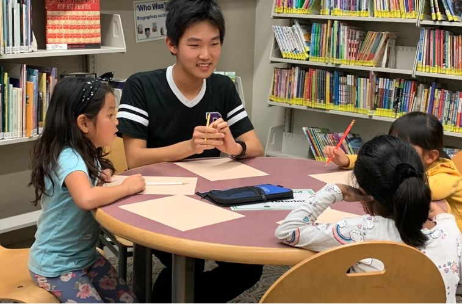

I was born in Iowa City and grew up in Irvine, California with my mom, dad, and younger brother. Ever since I remember, I’ve been a fan of math. From creating math games to play with my friends on the cruise to deriving Euler’s identity on napkins while waiting at a restaurant, I was always able to find something interesting to do with math.
I distinctly remember a time in fourth grade when my parents were exploring new houses for sale. As they inspected every corner of the house, I naturally got bored and wandered off on my own. We were getting ready to leave when I spotted a half-sheet of paper on a table, on which were written the formula for the sums of squares and cubes of the first n positive integers. That sheet of paper changed my leisure time plans for the next few nights. I remember feeling extremely accomplished after deriving all those formulas up to the seventh degree. By the eleventh formula, I realized that all of this was online and people found these results centuries ago, so what I just learned through my own exploration connected me to mathematicians in the past. People change. Math doesn't.
Math isn’t about finding the right answer. It’s about exploring the unknown. Read more about me on this website.
I started getting into coding in seventh grade and I got hooked immediately. I’d come home everyday and spend hours coding games and mathematical systems.
Eventually, I started to make serious coding projects and I wanted some way to display them for my friends to play. And that’s what started my github website. I asked my friends what they thought of my game, and some said they were “IQ tests”, which was fair.
Check out some of my puzzle games under the "Games" tab on this website.

Personally, I am very interested in research, since the idea of exploring the unknown is something I find very fascinating. Also, research is an incremental process spanning several millennia, so being a researcher connects you to a long history of human progress. Research is the process of expanding the domain of knowledge of the human species, which is what fundamentally drives progress in society.
While watching a video “The Enormous TREE(3)” from the Numberphile series, I was fascinated by how fast the “tree sequence” can grow. This sequence is not well-understood though, so I decided to investigate the problem by creating a novel sequence of tuples.
I studied the maximum length of such a sequence and it turns out the sequence grows very fast. It is remarkable to see how the results can be expressed using Knuth’s up-arrow notation and the recursive Ackermann function, and that it is associated with Eulerian numbers.
It was a difficult process learning how to structure proofs from scratch into publication, but overall I thought it was a rewarding process. You can find my paper here: https://www.tandfonline.com/doi/abs/10.1080/07468342.2020.1680227
This is me giving a talk about my paper at a graduate program at Cal State Fullerton:

Any mathematician loves fractals. They’re a perfect symbol for the beauty of mathematics. It’s a way to derive complexity from simplicity, and it represents a deep connection between nature and mathematics. One of the first things I wanted to do when I started to code was to create the Mandelbrot Set, a mathematical fractal known for its immense variety of complex patterns. I first tried writing code in Python Turtle, but it took hours to render a single image. I tried using Pygame, which was significantly faster, taking a few seconds to render an image. What settled it all, though, was the Javascript GPU, which was able to render the Mandelbrot set at 60 frames per second. This dramatic improvement in rendering speed encouraged me to make a variety of other fractals such as Julia Sets and 3D fractals.
When I heard of the Breakthrough Junior Challenge, I decided to make a fun video explaining fractals to a general audience. The video was limited to three minutes, which was sad since I could literally go on hours about these topics. Still, it was a cool opportunity to share these ideas with a broader community.
Watch my video here: https://www.youtube.com/watch?v=p55DiT4cqlo
Also, explore the Mandelbrot Set for yourself by visiting the "Mandelbrot Zoom" tab on this website. Visit the "3D renders" tab to explore some 3D fractals.

Even as a student who loved math, I understood that math isn’t always taught in an engaging way in schools; so, in eighth grade, I started teaching math at a local library for one simple reason - to help young students realize that math is not only important, but also fun. Math is a beautiful subject, and the sooner kids understand this the better.
After seeing the demand for math help from so many young students, I started to recruit and train more tutors to provide help to more students in need. We eventually expanded our program to six libraries in Orange County. During the outbreak of COVID-19, we moved our tutoring sessions online, which enabled us to help even more students. We now see tutors and students from LA, San Diego, riverside and even outside California in Texas, New York, Colorado, Ohio, and many more states.
Leading an organization this big takes a lot of energy, but seeing the positive learning results from many of our students makes it rewarding and exciting to me. I am very thankful to have a team of engaged leaders and tutors to share the same passion of teaching with me to pursue our mission.
For me, teaching in this program has always been incredibly enjoyable. My three years of teaching experience have taught me how to actively engage students and assessed me on how well I can explain the most basic math principles. As Einstein said, "If you can't explain it simply, you don't understand it well enough."
Check us out at this website: https://www.mathmatters4all.org/
One day our band director Mr. Stevens asked our Symphonic Band’s sax section to perform as a Saxophone quartet at our city’s Spirit of Excellence Gala. It was a pretty big event, so we were all excited to start practicing. Again, it was one of those things that just clicked. I started to organize practice sessions to play whatever music we like, gradually make our own arrangements, and just hang out. After a while, these practice sessions became part of our weekly routine.
We started inviting more of our friends to join in on our practice sessions. Later we started to perform at various events, and we really started to feel connected with the community. I never went to senior centers or homeless shelters before, but once we started to perform monthly at these places, I started to feel like part of their community. We performed live classical, jazz, pop and funk music at senior centers, nursing homes, homeless shelters, multicultural festivals, fundraising events, clubs, professional symposiums, and shopping centers. It’s always nice seeing people singing, nodding, dancing, and cheering to our tunes.
It has been three years since our group first got together, and we all certainly progressed as musicians, but more than that, we learned what it’s like to share music as part of a community.
To see some videos of our performances, visit http://goldenwindsax.com/